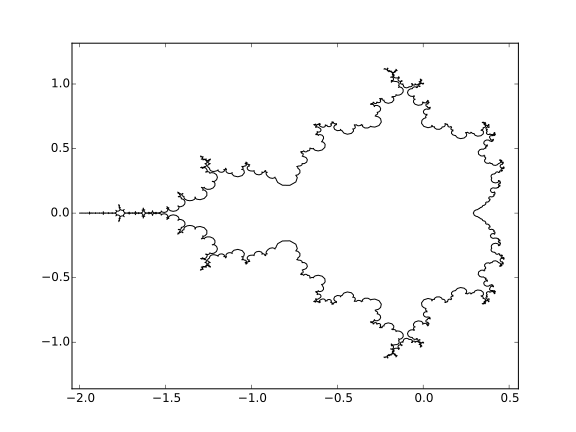

I have recently written a script that plots the Mandelbrot set boundary to use it as a vector graphic in inkscape. Of course only a curve that converges towards the fractal boundary can be plotted but it looks pretty good. The code is based on the great website fraktal.republika.pl and uses something called a “Jungreis” function that can map the unit circle to the Mandelbrot set boundary (see more on Wikipedia). Here is the code:
import numpy as np
import matplotlib.pyplot as plt
nstore = 3000 #cachesize should be more or less as high as the coefficients
betaF_cachedata = np.zeros( (nstore,nstore))
betaF_cachemask = np.zeros( (nstore,nstore),dtype=bool)
def betaF(n,m):
"""
This function was translated to python from
http://fraktal.republika.pl/mset_jungreis.html
It computes the Laurent series coefficients of the jungreis function
that can then be used to map the unit circle to the Mandelbrot
set boundary. The mapping of the unit circle can also
be seen as a Fourier transform.
I added a very simple global caching array to speed it up
"""
global betaF_cachedata,betaF_cachemask
nnn=2**(n+1)-1
if betaF_cachemask[n,m]:
return betaF_cachedata[n,m]
elif m==0:
return 1.0
elif ((n>0) and (m < nnn)):
return 0.0
else:
value = 0.
for k in range(nnn,m-nnn+1):
value += betaF(n,k)*betaF(n,m-k)
value = (betaF(n+1,m) - value - betaF(0,m-nnn))/2.0
betaF_cachedata[n,m] = value
betaF_cachemask[n,m] = True
return value
def main():
#compute coefficients (reduce ncoeffs to make it faster)
ncoeffs= 2400
coeffs = np.zeros( (ncoeffs) )
for m in range(ncoeffs):
if m%100==0: print '%d/%d'%(m,ncoeffs)
coeffs[m] = betaF(0,m+1)
#map the unit circle (cos(nt),sin(nt)) to the boundary
npoints = 10000
points = np.linspace(0,2*np.pi,npoints)
xs = np.zeros(npoints)
ys = np.zeros(npoints)
xs = np.cos(points)
ys = -np.sin(points)
for ic,coeff in enumerate(coeffs):
xs += coeff*np.cos(ic*points)
ys += coeff*np.sin(ic*points)
#plot the function
plt.figure()
plt.plot(xs,ys)
plt.show()
if __name__ == "__main__":
main()